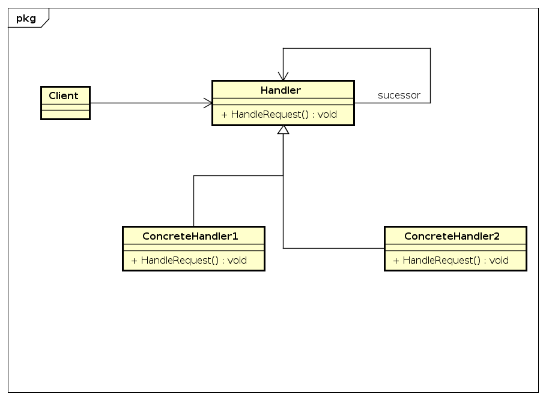

13 - Chain Of Responsability
Descrição do Padrão:
A intenção deste padrão de projeto é evitar o acoplamento do remetente de uma solicitação aoseu receptor, ao dar a mais de um objeto a oportunidade de se tratar dessa solicitação. Encadear os objetos receptores, passando a solicitação ao longo da cadeia até que um objeto a trate.
UML do Padrão:
Descrição do exemplo do livro: